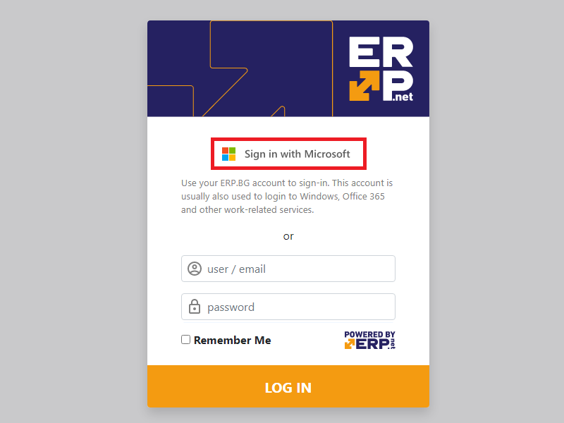
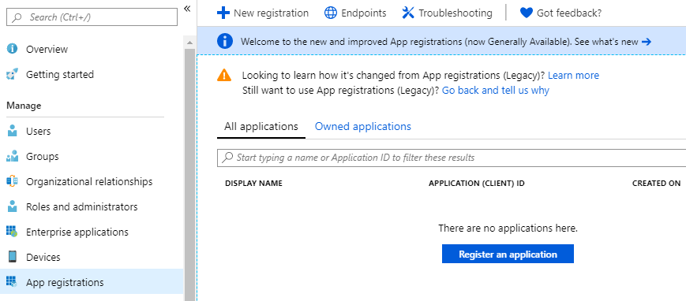

Azure authentication
ERP.net supports Azure as an authentication provider. There are a couple of Azure and ERP.net settings that should be configured for this authentication method to work.

Azure settings
Log into your Azure subscription via https://portal.azure.com.
Manage Azure Active Directory.
Register your application with your Azure Active Directory tenant by clicking App registrations -> Register an application.

Enter the required details. You can use anything for the name (for example: ERP.net Identity Server).
Leave “Accounts in this organizational directory only (Default Directory only - Single tenant)” checked.In the Redirect URI field enter the callback path configured in IdentityServer4 for Azure AD auth.
This will be https://<UIN>.my.erp.net/id/signin-aad, where:
<UIN>is the ERP.net unique instance name/idis the relative path of the ID site/signin-aadis the endpoint responsible for AZURE AD redirects (/signin-aad is constant for all databases)
- In the “Select a platform” drop-down menu, select Web.

Confirm the app registration creation by clicking Register.
Now, you have a new app registration. Navigate to “App registrations” and open your new app.

- Make a note of your Application (client) ID and Directory (tenant) ID values - they should be copied in the corresponding fields in the Sec_Domain_Providers table.
- Open “Authentication”, located in the left pane.
If you have to add more redirect URIs (in case you have more than one instance of ERP.net application server), you can add them via the “Redirect URIs” panel, by clicking Add URI.
Additionally, check the ID tokens checkbox.
- Finally, save your changes.
ERP.net settings
- In the "Setup / Security / Domains" section a "Domain providers" record should be created.
There is a default domain in the databases and the Azure record should be added there.

- The users are referenced by their email:

- There should be a license SEC01 - Security - Sign in with Azure AD